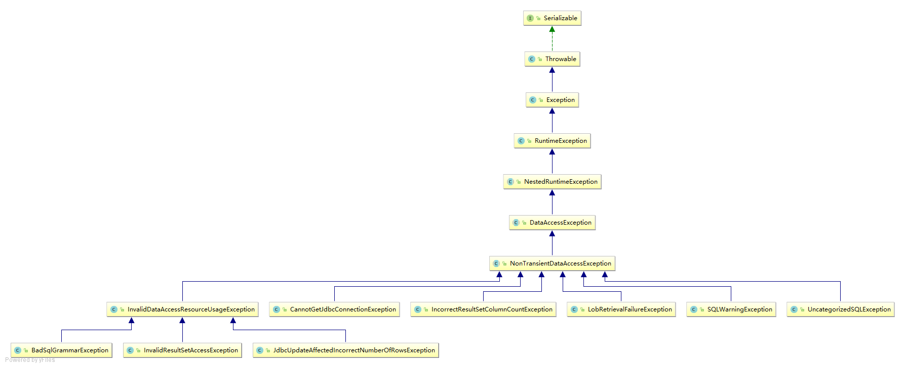

spring的数据库异常体系 发表于 2017-05-02 | 分类于 Spring | 前言最近工作中要对spring的数据库异常做处理，自己在不了解异常层次结构的情况下写了一个判断类，妥妥的被leader批了，自己就打开spring代码研究一下异常层次结构，画了一下UML图，希望可以学习的同时帮助到大家。 内容 上图中可以看出，DataAccessException是Spring的一个基础类，其他的异常都是基于此进行扩展和延伸的。 总结多看源码，多学习，多虚心请教。